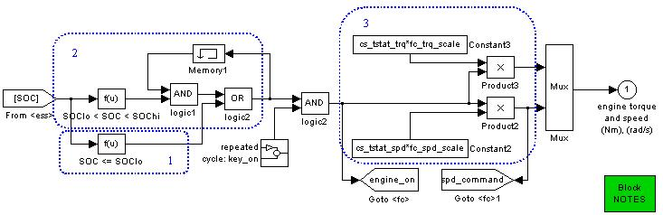

Series Thermostat Control Strategy
Role of subsystem in vehicle
The series thermostat control strategy uses the generator and fuel converter to generate electrical energy for use by the vehicle.
Description of modeling approach
The series thermostat control strategy uses the fuel converter as follows:
- To maintain charge in the battery, the fuel converter turns on when the SOC reaches the low limit, cs_lo_soc.
- The fuel converter turns off when the SOC reaches the high limit, cs_hi_soc.
- The fuel converter operates at the most efficient speed and torque level.
Variables used in subsystem
See Appendix A.2: Input Variables
Implementation
Series Hybrid Control Strategy (Thermostat) block diagram
The implementation of the series thermostat control stategy is found in the control strategy block diagram. The State Of Charge is input into the block, and the required engine torque and speed are the outputs.

- The fuel converter turns on if the SOC is below the low limit, cs_lo_soc.
- The fuel converter remains on until the SOC reaches the high limit, cs_hi_soc, if its previous state was on. After reaching the high limit, it turns off.
- The fuel converter operates at the most efficient speed and torque level as previously determined by the control file.
Back to Chapter 3